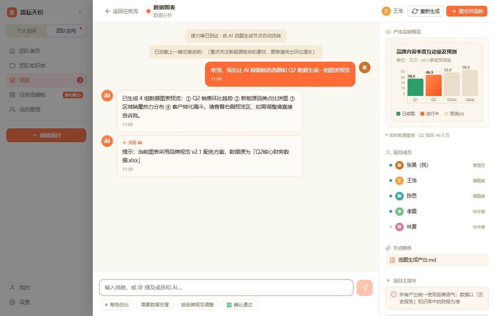
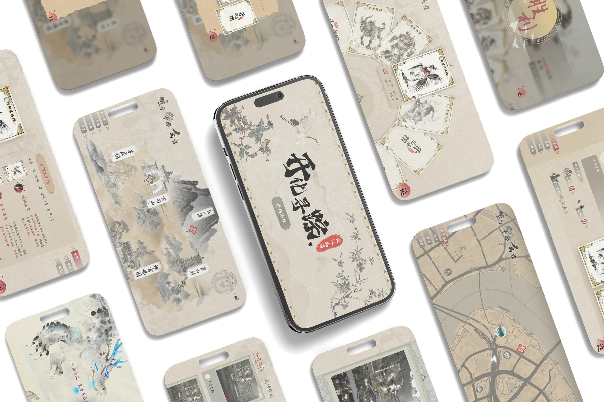
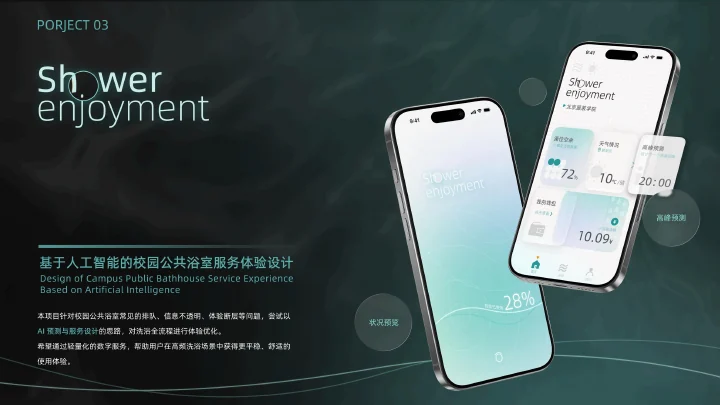

让复杂任务，在团队中接得住PORTFOLIO — 2026向下探索
01 / SELECTED WORK让复杂能力，
让复杂能力，
成为可以使用的体验。
从一次任务的开始，到结果被理解、修改与交付。
 从品牌目标，走向可编辑的内容
从品牌目标，走向可编辑的内容


04 / SERVICE DESIGNShower enjoyment校园公共浴室服务体验重构02 / INTERACTIVE WORK设计，不止
设计，不止
停在画面里。
进入原型，亲自走过一次任务的关键节点。
以下原型用于展示交互流程，不连接真实 AI 服务或发布渠道。03 / CREATIVE PRACTICE在产品之外，
浏览创作档案 ↗︎在产品之外，
继续练习表达。
CROW CROW自然形态 · 数字服装 · 三维叙事↗︎
CROW自然形态 · 数字服装 · 三维叙事↗︎

 STORYBOARD / GRAPHIC STUDY ↗︎
STORYBOARD / GRAPHIC STUDY ↗︎
CROW自然形态 · 数字服装 · 三维叙事↗︎
STORYBOARD / GRAPHIC STUDY ↗︎仿生人会梦见电子羊吗分镜 · 图形语言 · 视觉叙事↗︎
04 / ABOUT ME在产品的逻辑里，
在产品的逻辑里，
保留设计的感知力。
EXPERIENCE
在真实任务里实践
调研与需求分析
任务与交互设计
高保真原型
视觉与动态表达
蓝耘科技 AI 产品实习生
参与蓝耘天衍体验测试、新手引导及团队协作原型设计；开展蓝耘星河调研、产品定位与桌面端原型设计。
27 条需求记录34 条缺陷记录180 条高价值调研样本
北京回旋加速网络科技 AI 内容运营实习生
参与橙光游戏角色立绘生成与老旧素材修复，进行生成后筛选、修图和整理，处理素材 1000 余张。
其他实践
浙江医保宣传短片
参与 AI 宣传影像制作，将信息表达与动态视觉结合。
良渚博物馆宣传动画
参与文化主题宣传动画实践，探索文化内容的影像化表达。
Biftor 青年友谊商店
参与 VR 展示实践，探索空间中的内容组织与互动体验。